Disciplina: Mudanças Climáticas
Engenharia Florestal - UDESC
Prof. Pedro Higuchi
Um modelo é uma versão simplificada do mundo real.
Usamos modelos o tempo todo, mesmo sem perceber!
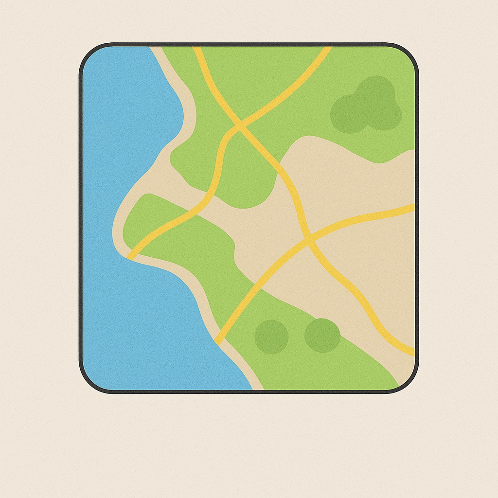
Um mapa é um modelo do território
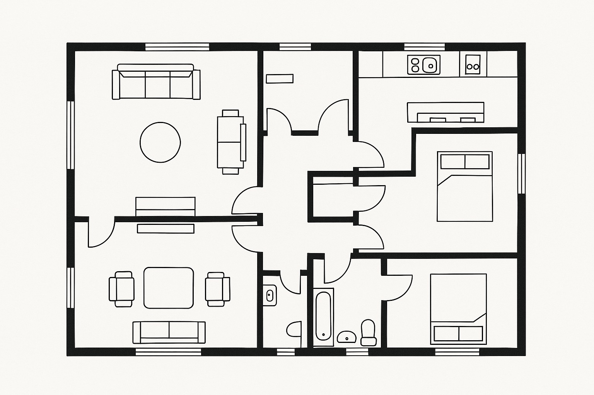
Uma planta baixa é um modelo de uma casa
Um algoritmo é um passo a passo para resolver um problema.
Pense como uma receita: você segue as instruções na ordem certa e chega ao resultado.
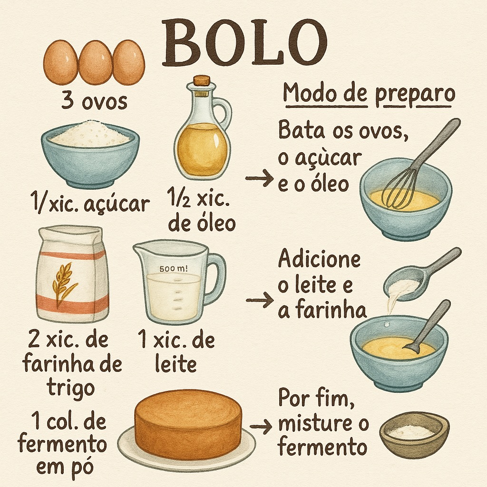
Uma receita de bolo
Instruções para montar um móvel
Para as notas [7, 8, 6, 9]:
Algoritmos de computador seguem a mesma lógica, só que com muito mais dados!
Cada espécie precisa de condições ambientais específicas: temperatura, chuva, solo...
E a pergunta mais importante:
Essas previsões ajudam vocês a tomar decisões reais:
Para criar nosso modelo, precisamos de dois tipos de informação:
GBIF - banco de dados mundial de biodiversidade
Um mapa gigante com todos os locais onde alguém já encontrou cada espécie.
WorldClim - 19 variáveis climáticas globais
Com esses dados, sabemos as condições de temperatura e chuva em cada ponto do Brasil.
Vamos pensar no modelo como um detetive investigando onde uma planta gosta de viver.
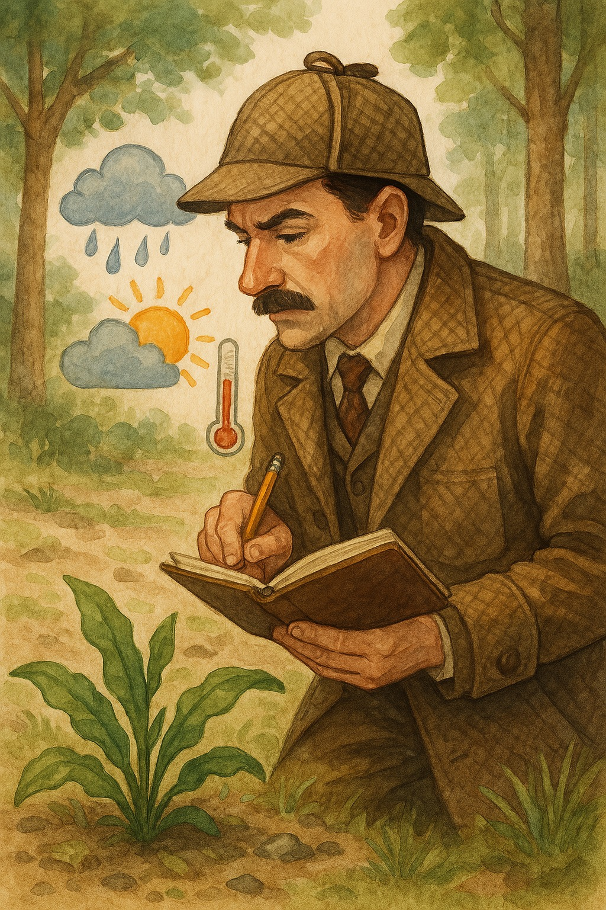
O detetive visita locais onde a planta foi encontrada e anota:
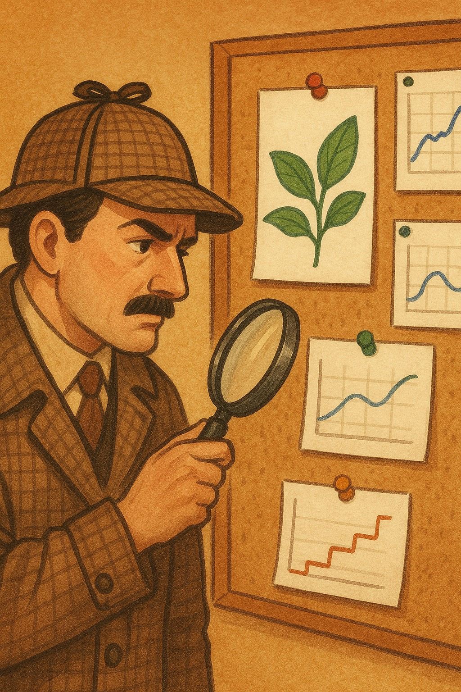
Depois de visitar muitos locais, o detetive percebe:
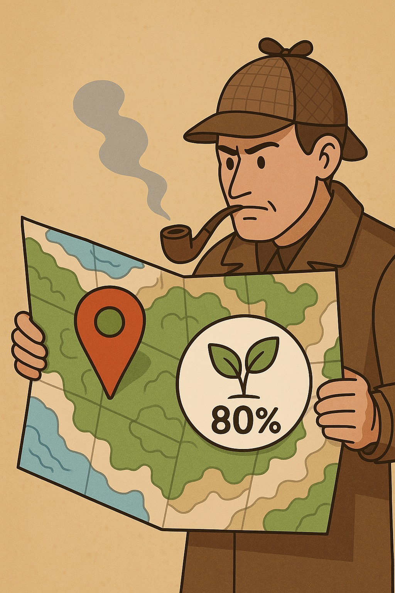
Agora, mesmo sem visitar um lugar novo, o detetive consegue dizer:
O detetive sabe que não é perfeito. Ele pode não ter considerado competição entre plantas, tipo de solo, dispersores...
"Todos os modelos estão errados, mas alguns são úteis."
Em vez de nós dizermos as regras ao computador, ele descobre as regras sozinho olhando os dados.
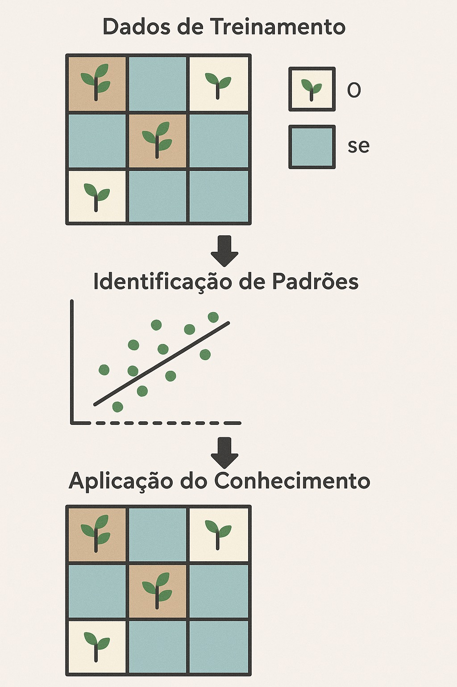
Funciona como um jogo de perguntas de sim ou não.
Cada pergunta divide os dados em dois grupos, até chegar a uma resposta.
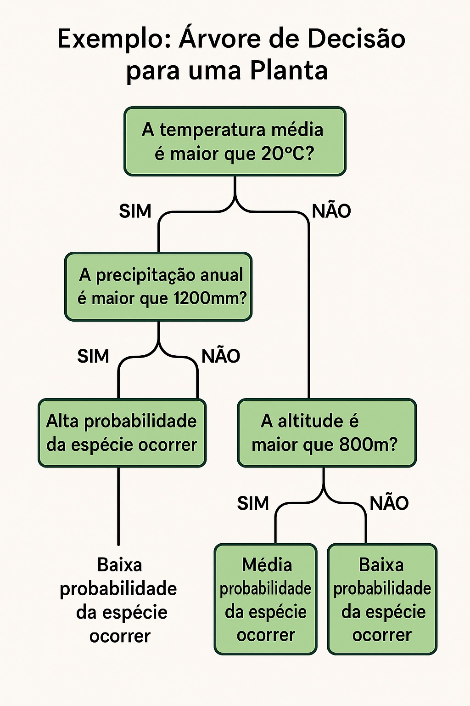
Temperatura > 20 graus?
├── SIM: Chove > 1200 mm?
│ ├── SIM: Provavelmente VIVE aqui
│ └── NÃO: Provavelmente NÃO vive
└── NÃO: Altitude > 800 m?
├── SIM: Talvez viva aqui
└── NÃO: Provavelmente NÃO vive
Cada "pergunta" usa uma variável ambiental para dividir os dados. É como um fluxograma!
"Floresta Aleatória" - é um algoritmo que cria muitas árvores de decisão e combina os resultados de todas elas.
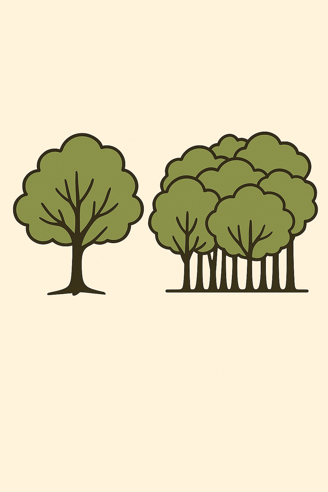
Uma árvore sozinha pode:
Uma floresta de árvores diferentes dá respostas mais confiáveis!
Random Forest é como ter uma equipe de detetives em vez de só um:
O algoritmo tem alguns "botões de ajuste" que podemos configurar.
Vamos ver os três mais importantes:
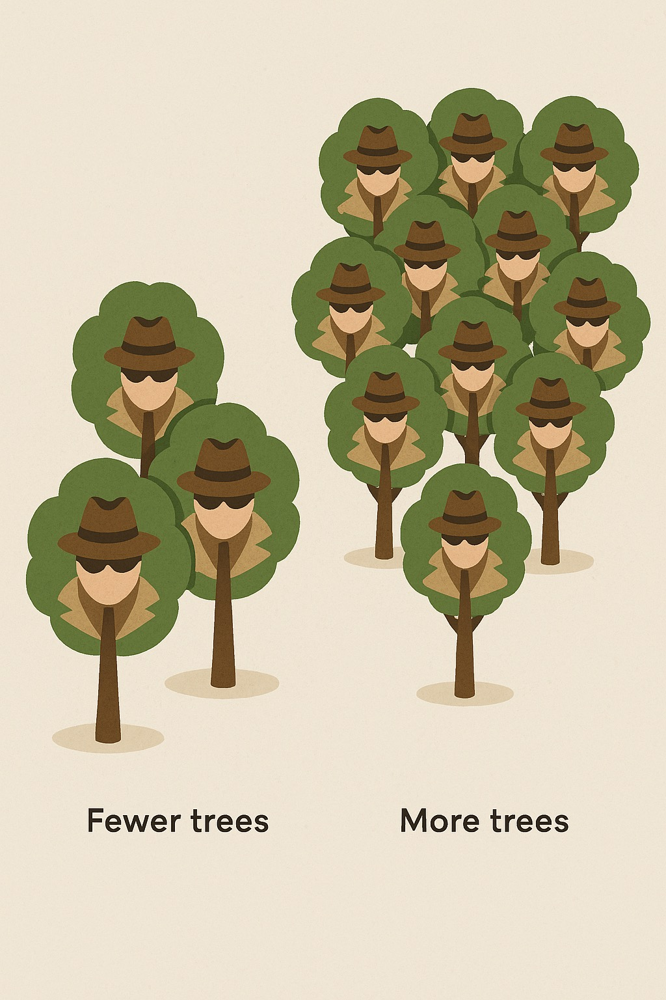
"Quantos detetives na equipe?"
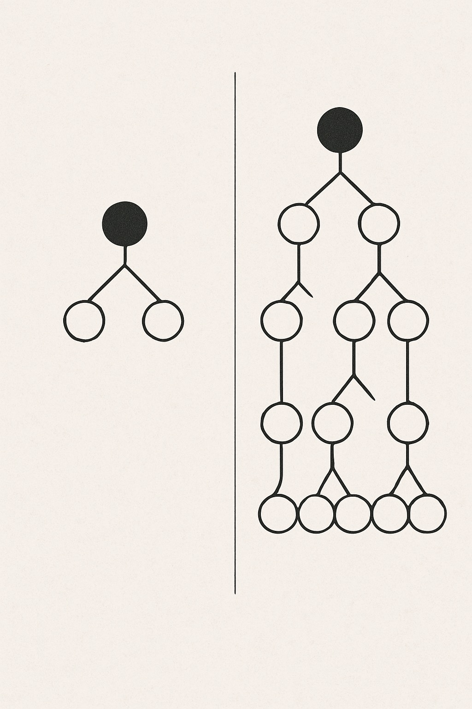
"Quantas perguntas cada detetive pode fazer?"
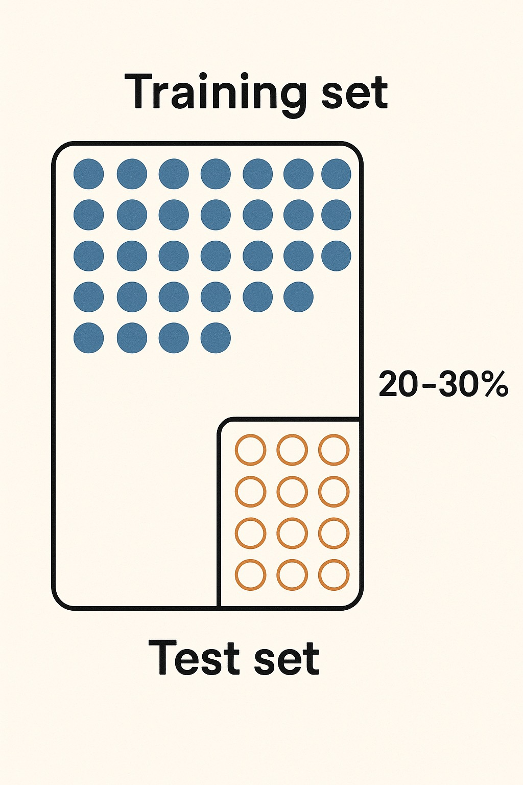
"Guardar uma prova para ver se o modelo acerta"
Modelagem de distribuição é uma ferramenta profissional real, usada em:
Ex: se a Araucaria angustifolia vai perder área com o aquecimento, vale considerar espécies complementares.
Agora vamos aplicar tudo isso na plataforma TAIPA!